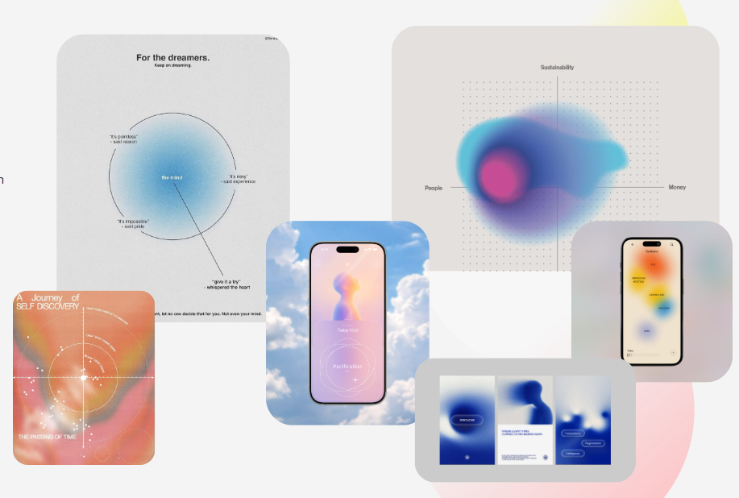

Le Wagon — Projet
01 / 08
Data Science
Analyse /
cartographie
rêves
.
Écouter / lire des rêves
Les analyser et transformer en expérience sensorielle —
émotions, couleurs, images, sons
Slide 02 — Les données
Datasets
.
Hugging Face
DreamBank-dreams-en · ~20 000 rêves
Datas : authors /date / text of the dream / gender
huggingface.co/datasets/DReAMy-lib/DreamBank-dreams-en
Collected by : Adam Schneider & G. William Domhoff (Psychology Dept., UC Santa Cruz) :
Source
+
Explanations of series
Dryad / Académique
Our Dreams, Our Selves: Automatic Interpretation of Dream Reports
Classification "Hall–Van de Castle dream coding system" à partir du dataset DreamBank-dreams-en
datadryad.org/dataset/doi:10.5061/dryad.qbzkh18fr
Kaggle · source d'inspiration
(Dream Symbols — symbol / context / meaning)
Pas sérieux scientifiquement mais peut être source d'inspiration ?
kaggle.com/datasets/michaelberger/dream-symbols
Slide 03 — Vue d'ensemble
Pipeline
.
4 étapes, du texte brut à l'expérience sensorielle.
01
Preprocessing
+ NLP
02
Machine Learning
Classification
03
Deep Learning
Analysis
04
Dataviz + Gen
Experience
Slide 04 — Étape 1
Preprocessing
+
NLP
.
Input
Texte du rêve
V2 : voix avec Whisper
Hugging Face
Output
→
Vecteurs numériques des rêves
Cleaning / Preprocessing
Nettoyage
Tokenization
Embedding
Vectorisation
Embedding sémantique
all-MiniLM-L6-v2
Slide 05 — Étapes 2 & 3
Machine Learning /
Deep Learning
.
Supervisé · Classification
Codage Hall & Van de Castle
Cauchemar / normal / absurde / etc.
Logistic Regression / SVM
benchmark
Non supervisé · Clustering
Cartographie des rêves
KMeans
méthode du coude / score de silhouette → nb de clusters
UMAP / t-SNE
réduction dimensionnelle
→ Objectif : créer une
cartographie 3D des rêves
(Plotly)
Deep Learning · Analyse émotionnelle
7 émotions
DistilRoBERTa
emotion-english-distilroberta-base
Slide 06 — Étape 4
Datavisualization
+ Generation :
Experience
.
Interface Streamlit · émotions → couleurs, cartographie, images, musique, blob 3D
Couleurs
mapping
émotionnel
Cartographie
Plotly
UMAP 3D
Images
Stable
Diffusion ?
Musique
MusicGen-small
(+ léger)
Blob 3D
Three.js ?
(MLOps) — déploiement et mise en production si le temps le permet.
Slide 07 — Direction artistique
Moodboard
.

Slide 08 — Prochaines étapes
Todo
.
⚙️
Organisation du projet
Git
/ Trello / Répartition rôles / Agilité
🗂️
V1 / V2 / V3
Définir le découpage des versions
📊
Métriques
Accuracy, silhouette score, etc.
🎨
Maquettages UI/UX / Dataviz
Prototypage de l'interface
1
2
💡
Idées futures
Extensions et features bonus
⚠️
Risques / avantages
Mitigation et plan B
← → pour naviguer · espace pour avancer